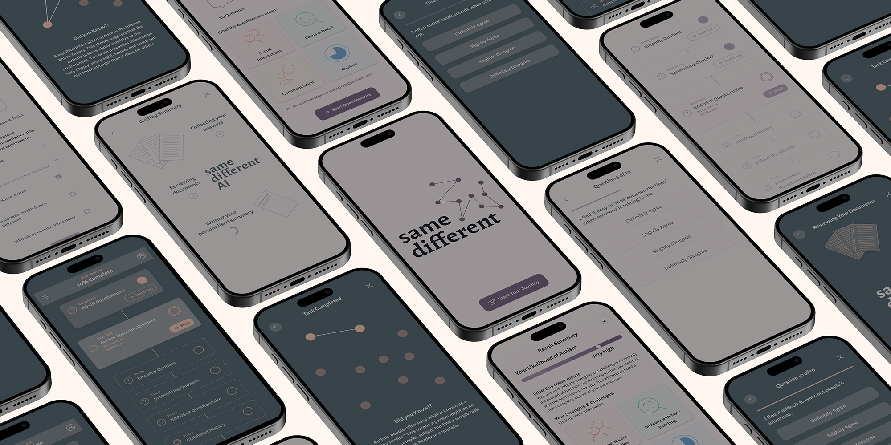

same different
Adult Autism Diagnosis - Done Differently.
Overview
same different is a brand, service and product offering, enabling adults, to explore their potential neurodiversity. It is designed to reduce the friction many adults are faced with when navigating the current pathway. This will enable waiting times for diagnosis to be significantly reduced and user satisfaction with the process to increase.
| Role | Brand, Service and Product Designer |
| Timeline | 16 Weeks – (Jan – May 2026) |
| Audience | Adults (over 18 years of age) who want to discover whether they are neurodiverse or not. |
| Tools & Methods | User Research (Surveys and interviews), Desk Research (Scientific studies, personal blogs, etc.), Data Analysis, User Personas, User Journey Maps, Storyboarding, Service Design Blueprinting, Brand Design, Wireframing, Prototyping, User Testing (Moderated and Unmoderated, Remote and In-Person). |
| Outcome | Service Design Blueprint validated with Autism Specialists and Support Workers. Mobile App Prototype – Tested with 5 Participants. Brand Guidelines Document. |
The Problem
It is thought that over 500,000 adults in the UK are autistic but are unaware or waiting for an assessment. Waiting lists for assessments have reached 5 years in some parts of Northern Ireland with the average wait being 18 months. With NICE guidelines stating assessments should be carried out within 13 weeks of referral, the size of the issue is stark.
To access support requires a confirmed autism diagnosis. Therefore people waiting for an assessment cannot access support to help them understand their autism. Support can also allow autistic people to maximise their strengths and minimise the impact of any challenges they face.
The impacts of these waiting lists do not end with the individual, autism specialists face continuous pressure to carry out as many assessments as posible as well attend meetings, keep up-to-date with the most recent autism research, as well as ensure all administrative tasks are complete. Working in small, underresourced teams, these requirements are extremly difficult to meet and cause huge amounts of stress.
Requirements
- A service design blueprint for a start-to-finish process allowing users to progress from questioning their neurodiversity to a diagnostic assessment with a specialist.
- A brand that users can connect with and feel comfortable using while on their journey of discovery into their neurodiversity.
- An interactive prototype of a digital product that enables a user to complete diagnostic tasks that do not require a human specialist.
Research & Discovery
I started this project with a period of research and discovery, part of this was to collate and analyse information from my own experience of the adult autism diagnosis pathway, as well as that I have gathered from conversations with professionals and other autistic people over many years.
I then supplemented my knowledge by carrying out two online surveys, which allowed to me gather a wide-ranges of qualatative and quantitive data from the perspective of both autism specialists and neurosiverse people.

Designing a new Adult Autism Diagnosis Service
After interpreting the data and uncovering key insights I was able to start the service design aspect of the project, I started by mapping out the current pathway and marking out the pain points and improvement opportunities.
This led to a process of ideation and iteration on a blueprint for a new service, until I had created a service design blueprint that stood up to the scuritiny of autism specialists and autisitc people.

Designing a Digital Product for the Service
With a service design in place, I was able to draw up a set of requirements of my digital product. With a clear set of requirements, I was able to create an early lo-fi design to test with a group of perspective users. While this proved that the product worked and met the requirements I had set, it did uncover several areas for improvement.
These user testing results allowed me to iterate on my design, and make some major changes.
These included:
- A redesigned onboarding process, to reduce time to value for new users.
- A new timeline based home screen, to allow users to see their whole journey mapped out, with clear indication of the work they had completed, what they needed to do next and what tasks lay ahead.
- Using progressive disclosure to reduce cognitive load while not sacraficing important text content.
- Refactoring the product's tone of voice, moving away from medical and deficency based terminology to a tone of voice with positivity, and support at its core.
- The addition of animation and motion to celebrate a user's progress and help maintain motivation, on what can be a challenging journey.
.png)
.png)
.png)
With these changes made and a high-fidelity, interactive prototype created, I was able to complete a second round of user testing to verify the changes and iron out any final bugs. One issue that was discovered was the affordances I had included for clickable elements, which left users unsure as to which elements were interactive and which were not.
This required a quick redesign to ensure the difference was made clear and further testing proved the changes were successful. Final testing proved that the app met all of the requirements that I had set at the beginning of the project.
Designing a brand that users can connect with
The final part of the project was to design a brand that accuarately represented the values, vision and mission of the project. This was an ongoing task that I carried out alongside both the service and product design elements. I started by developing brand values, a vision for the brand, as well as a brand mission. These are key elements which shape the rest of the brand assets, as well as inform other design decisions, so I always endevaour to get these in place as early in a project as possible.
Brand Values
- Honest
- Empower
- Innovate
- Collaborate
- Empathy
Brand Vision
To innovate using the latest technology alongside human expertise to offer timely diagnosis and support for autistic adults.
Brand Mission
To bring together the best of human expertise and technology within a single service that supports autistic adults from initial concerns through to diagnosis. Treating people as individuals, and removing hurdles to accessing support are key facets of the service. Collaborative design and iteration based on user feedback are essential aspects from the beginning and will ensure accessibility across all aspects of the service. Ensuring people can understand and question how our technology is used will keep us on track and lead us to maximise our positive impact for everyone.
With my brand values, vision and mission in place, I could move on to developing visual elements for the brand. These include a brand logo, which turned out to be one of the most challenging aspects of the whole project. My research had shown that a lot of imagery and icons that have been assoicated with autism are controversial with autisitc people themselves, with a lot of autistic people feeling that this iconography has been assigned to them rather than being chosen by them.
I did not want my logo to have the same issues, so I spent a lot of time drafting different logo possibities, but even with refinement none of the options truly represented my brand in the way I wanted, in particular the individuality I wanted to represent for each individual user. A discussion with my lecturer Daniel, brought up the idea of a dyanamic brand, where one or more of the brand elements can change for individual users. Looking into this further it made sense for my logo to be different for each individual user.
Designing this dynamic logo, meant taking a different approach, where I needed to develop rules to guide the generation of each unique logo rather than simply designing a single logo. For this I decided to make the logo represent each user's individual journey, and as the journey takes ten steps from initial screener questionnaire to diagnosis decision, I developed a logo where 10 dots were connected by lines, similar to pictorial representations of star constellations. An algorithm could then place these dots and the connecting lines anywhere within a set bounding square and abibing by rules for minimum spacing between dots and that lines should not cross. I used this to develop my master logo which I used in all brand mock-ups and assets as an example.
I then applied the elements of the brand I had designed to the mobile app I had designed. This included using the dots from the logo on the home screen to represent each step and crafting an animation, so that as a user completed a task another completed dot and connecting line was added to their logo design.
Using AI to enhance the design process
It was clear from the start of the project that AI was going to play a role, in the design process. However, my experience experimenting with tools such as Lovable, Figma Make and Google Stitch had shown me that they were not ready for me simply to do some discovery work and then hand over to the AI. So I needed to consider where in my workflow AI tools could help me to be more efficent with my time and still maintain high-quality output. I decided that the two main areas would be in creating the text copy for my app and assisting with fact finding throughout the project.
Developing Text Copy
As the design of my app came together, I realised that I was going to need a large amount of text copy, and while through user testing I implemented progressive disclosure for large chunks of text, to provide poeople the information they needed I would still need to have it available. My initial plan was to using either a specific agent or a Claude skill, create the summaries as part of the prototype, however the technical complexities of creating the required AI and then linking it to the Figma prototype quickly made this idea unfeasible. Therefore, I needed to create realistic examples of these pieces of text copy, and I needed these to be in a style that matched my brand. To acheive this I turned to Google Gemini Pro, as this allowed me to set rules that the generated content must follow, so I was able to add my brand tone of voice guidelines, as well as requirements for accessibility. At first, I requested that all responses followed all best practice rules for creating text content for people with neurodiversity, unfortunately this created content that had no character, felt very artificial and in some cases could be considered condescending, so I editied the rules allowing the AI model more freedom and through trial and error, as well as some edits by myself got to a place where the generated content met my requirements. Once this work was complete it was just a case of crafting the correct prompt, checking the output and adding to the prototype.
For me, I would estimate that using AI in this way saved me siginificant time, and by investing the time to set up the correct rules and create a reference for the model to match, I could be confident that I could rely on the AI model to generate consistent, high-quality, on-brand content.
Additonal Research
The second key area in which AI enhanced my work was when I needed additional research through the design process, as I have mentioned above my initial research was through user surveys, but as I continued to design my app, I realised there were times when I needed additional information. As an example, when I redesigned my app to be less medically and deficency focused, I wanted to include some facts about autism that users might find interesting. To find these facts myself would have taken a lot of time, searching, reading different articles and creating a list of facts to include, so I decided to use AI, again I selected Google Gemini Pro as a general purpose AI model, and was immeadiately impressed by the the accuaracy and relevance of the facts it found for me. This saved me a huge amount of time, because apart from a small amount of verification of the facts, I could simply copy and paste them straight into my UI.
Outcomes
Strenths and Weaknesses of the project
The key strength of this project, is that it looks at the problem of the high number of adults seeking an autism assessment, from the perspective of a person seeking an answer to whether they are autistic or not. While it is designed as a service to work alongside the current pathway, by changing the focus from what is available under current circumstances to what people actually need, this project illustrates, that many of ths issues we see within today's service could be reduced if not eliminated, by taking a user-centric approach and meeting people where they are. Every aspect of the design was considered from the perspective of an adult seeking answers and designed to eliminate the pain points with the current service that I identified through my research. This allowed me to present a complete service, product, and brand solution which had tested successfully with both potential users and professionals from the autism sector.
A weakness within the project is that refoctoring the service offering and developing a digital product, cannot overcome the issues of underfunding and a lack of trained professionals to offer autism assessments. While I can offer a product that can offer the ability to gave an accurate indcation of whether a person is autistic or not, only a trained professional can make a final diagnostic decision. This is to ensure elements that a digital product cannot recognise, such as failing to understand a question being asked or misrepresenting themselves can be assessed. This means I cannot claim my product will solve the complete issue of long assessment waiting lists, although it should help significantly.
Lessons Learned
A project of this length and scope has provided me with many lessons, the key one being the importance of user testing, by testing my project and brand regularly with a wide range of people, I was able not only to discover issues but also areas for improvement. This allowed me to create a significantly improved outcome than if I had have not completed testing. I feel another lesson I learned was the importance of setting strict scope parameters, in an area as large as autism diagnosis, with so many potential solutions, it would have been easy to allow scope creep to take over this project, and at the start I did set parameters that were simply not achieveable in the time I had available. I therefore had to cut certain aspects of my digital product to meet the deadlines that were in place. Unfortunately this did mean I had wasted time on the preparation work I had completed for these areas, and if I were to complete this project again, I would spend a little extra time at the start mapping out a realistic timeline to avoid wasting time looking into areas that I would not be able to complete work on.
For more in-depth information on this project, check out my project blog.
Home